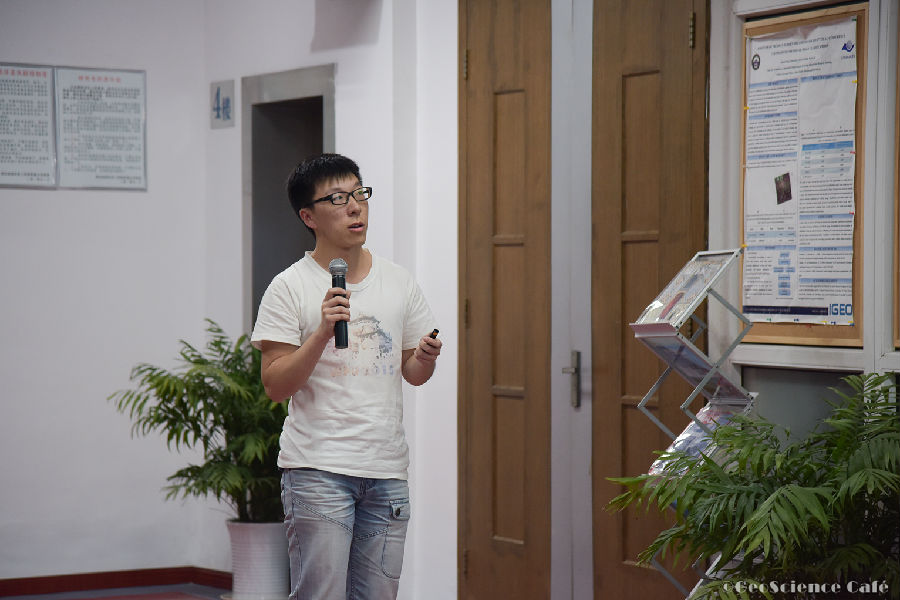
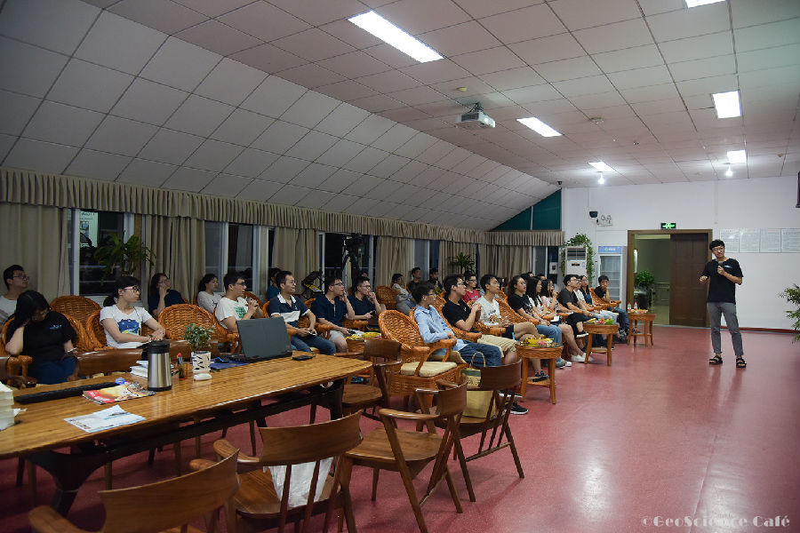
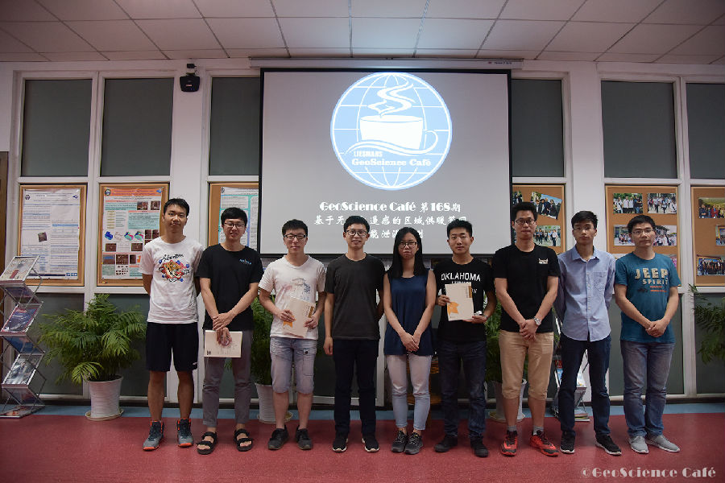

核心提示
测绘遥感信息工程国家重点实验室的无人机热感团队，近日受邀赴瑞典耶夫勒市能源公司，为其成功探测并定位供暖管网的泄漏位置。据了解，北欧国家的区域供暖主要由当地的热力公司经营和维护，目前热力公司采取的供暖管网热能泄漏监测方法多为人工检漏，准确性和效率较低，容易贻误排除故障的时机，造成大量能源浪费。实验室无人机热感团队利用无人机搭载热红外及可见光传感器可快速获取大范围供暖管网热影像，借助计算机视觉算法可实现半自动的热泄露点检测，满足北欧热力能源企业的应用需求。在报告中分享了团队各成员在项目进展过程中具体负责的工作内容，以及实验数据采集过程中的一些经验与感悟。
人物名片
无人机热感团队包含5位成员，均为测绘遥感信息工程国家重点实验室在读研究生，是武汉大学、武大吉奥公司与瑞典耶夫勒市国际科技合作项目的核心成员。5位成员分别是总体负责的2016级博士生王心宇，负责无人机操作的2016级硕士研究生卢雲成及贾天义，负责热异常探测的2016级硕士研究生徐瑶，以及负责影像拼接、融合的2015级博士生向天烛。团队携带自主研发的新型热感无人机和热能异常探测系统，于2017年5月在瑞典耶夫勒市开展了为期一周的“无人机热感区域供热系统泄漏检测”实地测试工作，为其成功探测并定位供暖管网的泄漏位置。
报告现场
6月16日，武汉大学测绘遥感信息工程国家重点实验室张良培、钟燕飞、夏桂松教授指导的无人机热感团队做客GeoScience Café总第168期学术活动，介绍了他们在瑞典-耶夫勒市开展的为期一周的“无人机热感区域供热系统泄漏检测”的实地测试工作。团队5位成员分别介绍了此次测试工作中所用到的国际领先技术，也介绍了此次瑞典之行的见闻感想。5位同学带来了一场精彩报告，现场氛围活跃，观众认真听讲并获益匪浅。
供暖管网热能泄漏如何检测？无人机热感开创新局面
区域供暖管网是全世界最常用的供暖方式，常用方法是通过热力站对水进行加热，再通过管网将水输送到工业区和居民区，达到供热的目的。但随着元器件的老化和管道的腐蚀，经常会出现泄漏的情况。泄漏通常由小到大，开始是几滴水的泄漏，随着腐蚀的加剧，泄露面积渐渐扩大。管网泄漏一方面会影响供暖，一方面也会污染环境。
那么如何检测这种泄漏呢？“目前热力公司采取的供暖管网热能泄漏监测方法主要有两种，一种是人工检漏的听漏法，准确性和效率较为低下，容易贻误排除故障的时机，造成大量能源浪费；另一种是有人机搭载热红外的方式，但是这种方法通常需要层层的审批且难以实时自动地获取数据。”王心宇介绍，“针对现有方法的缺陷，我们小组利用无人机搭载热红外及可见光传感器来快速获取大范围供暖管网热影像，借助计算机视觉算法实现半自动的热泄露点检测。
无人机热感“体检”核心技术
为什么选取无人机？因为与有人机相比，无人机更加安全、稳定和敏捷，其机身轻巧可靠，结构紧凑，可以实现更多角度的拍摄且能够适应较为复杂的地理环境。同时，无人机具有高清晰度、大比例尺且起飞降落受场地限制小的优点。此外，由于无人机通常体积较小且不受航高限制，成像质量和精度都高于大飞机航拍。另外无人机响应快速且成本相对于有人机更低。
为什么选取热红外？王心宇解释道，在思考解决探测泄漏问题的先进技术时，首先想到的就是红外遥感，因为温度和红外通常是息息相关的。红外的电磁波谱是1μm—1000μm，遥感常用的波谱分为短波、中波和长波红外。相对来说，短波红外对极高温物体更敏感；中波红外常常用于检测800摄氏度左右的物体，比如森林火灾等；常用的长波红外范围约在8μm—12μm，其检测的物体温度通常在零下20摄氏度至零上40摄氏度之间，也就是通常的环境温度。
接下来，卢雲成介绍了系统的硬件平台与关键技术。硬件方面（图1），首先包含一个飞行平台，即本项目中选择的无人机。无人机中搭载可见光传感器和热红外传感器，由红外相机探测热泄漏，自然光影像作为热红外影像的补充，提供更多辅助信息。此外，还需要一个地面站对无人机的航线进行规划，并接收无人机传输过来的热红外影像及可见光影像，同时由无人机操作者根据两种影像数据调整飞行路线。
关键技术方面，本系统采用最新的可见光、热红外传感器，构建了自主研发的无人机热感系统，为热泄漏检测提供真实、原始的可见光与热红外影像，并利用最新的热红外影像拼接技术、热能异常探测技术对遥感影像数据进行分析，进而获取精确的管道泄漏位置。
先进技术力促中瑞国际合作
接下来，王心宇介绍了此次项目发起的初衷。2014年成立于瑞典耶夫勒市的吉奥欧洲分公司首先察觉到了北欧市场的一个比较大的管道泄漏探测需求，而无人机热感团队的指导老师们恰好在该方面拥有领先的技术。于是，吉奥欧洲找到了他们，希望借助于他们团队的先进技术，服务于管道泄漏探测，进而促成了这次合作。第一个试点城市是瑞典的耶夫勒市，为此，耶夫勒市市长在2014年11月来到实验室进行了一次交流访问。实验室、吉奥欧洲以及耶夫勒市能源公司三方共同完成了武汉市国际科技合作计划项目的可行性研究报告，并为后续的一系列合作打下了良好的基础。
本次测试选取的城市是瑞典的耶夫勒市。耶夫勒市是耶夫勒堡省的首府，靠近波罗的海，地处北欧，冬天寒冷而漫长，区域供暖系统在北欧的覆盖面广，年度供暖时间长，部分地区甚至全年集中供暖。热能管道使用年限较长，已经普遍使用了几十年甚至上百年，处于管道事故的高发期，热能泄漏率较高。由于管道一般埋在地下，一旦发生热能泄漏难以探测及定位，长年累月会造成能源大量浪费并引发众多潜在的危险。当地热力公司统计数据表明，目前每日管道泄漏水量约为100-200立方米，其希望通过改善泄漏点的监测方法，将每日泄漏水量降低到50立方米以下。
那么这项“体检”监测工作具体是如何开展的呢？贾天义同学给我们做了详细介绍。首先耶夫勒市能源公司为他们团队申请了一个无人机的飞行许可以及三块测试用地，他们此行的主要任务是在能源公司给定的这三块特定区域内探测出全部的泄漏点。团队的成员为了在测试中得到更好的效果，测试了下午四点至七点以及凌晨四点至七点的两个时间段。经过对比分析得出，下午四点至七点地表温度较凌晨高，不利于热红外影像上目标信息的提取。于是，团队选择了每天凌晨四点至七点这个时间段来进行数据的收集，并且将每日收集的数据进行时间与位置坐标的标注，以方便后续的分析。最终，团队成功探测出全部的三个泄漏点，得到了耶夫勒能源公司的认可。
此次国际合作得到了当地媒体的相继报道，包括耶夫勒市当地报纸、新闻网站和耶夫勒能源公司官方网站，同时也在武汉大学研究生院网站、武汉大学新闻网、测绘遥感信息工程国家重点实验室网站上进行了相应的报道。
不一样的耶夫勒，一样的测绘人
贾天义同学介绍，一下飞机，他们就感受到了建筑物和人口稀少的空旷感。耶夫勒市全市只有七万人左右，商店、火车等多数设施都采取自助服务的形式。
另外，由于耶夫勒市也是“测绘之都”，所以在耶夫勒大学里也常常能看见背着全站仪进行实地测量的同学，难免想起信息学部同样处处可见的场景，顿生亲切感。
最后，贾天义给我们介绍了他们在瑞典的住宿与饮食情况。同时，还给观众展示了许多他们在瑞典拍摄的图片，报告在精彩又生动的展示中圆满结束。
互动交流
观众A：谢谢师兄的精彩报告！我想请问师兄，你们团队选取的无人机是大疆某型号的，这个型号的无人机续航时间是15分钟，那么你们的作业效率是怎样的呢？
贾天义：我们的航带一条是200米，最多是4条航带，无人机每次飞行完这几条航带再下来。我们有6块电池，每次飞行使用一块。此外瑞典当地部门还给我们提供了一个可以给电池充电的地方，所以我们的6块电池也可以不停地循环使用，保证了不间断地作业。
观众B：师兄你好，请问你们讲述的管道泄漏，就是通常是一个管道中的点在漏水，是这样的吗？那么这个泄漏点的面积有多大时，你们可以判断出来？
王心宇：通常在管道的连接处会出现泄漏，泄漏点较小的话是一个小区域的泄漏，较大的话会出现一个辐射状的泄漏。关于泄漏点面积这个问题，无人机的分辨率大概在0.1米，管道的宽度通常在10cm到40cm左右。一般泄漏宽度在几百个像元才是泄漏，如果是四五个像元，通常不是泄漏。
观众C：请问无人机拍摄的影像是实时传输回来还是只是实时的存储？另外我们自己也有一个无人机，是做大气地面验证的，我们的数据是实时传输的，但是在传输的过程中会掉包，就是比如说，应该每1秒传回一条数据，但是实际过程中是十几秒才传回一条数据，请问你们有遇到过这种问题吗？
王心宇：有一部分是实时的传输，供我们团队的飞行和分析人员看，还有一部分是存储在相机里，等飞行结束之后再分析。另外，我们还想在后期做一个实时读传的工具，就是图像拍摄完成之后，实时的传输、读取和分析，目前这一部分工作我们还没有做。关于你说的数据掉包问题，这个应该是跟无人机硬件及实际采集情况有关，比如它每秒支持传输的数据量以及回传过程中是否有遮挡等。如果无人机上读传系统的强度非常强的话，就可以达到一个很好的读传效果，但是一般的商用无人机，它的读传效果相对是比较弱的。如果对读传要求比较高的话，可以选择在这个方面性能更好的无人机产品。
精彩瞬间


